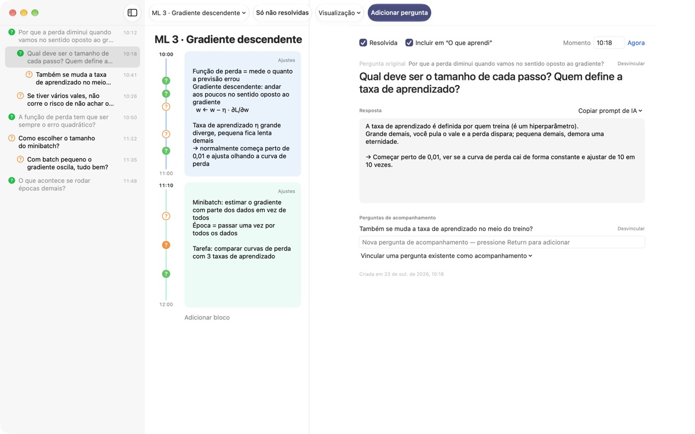
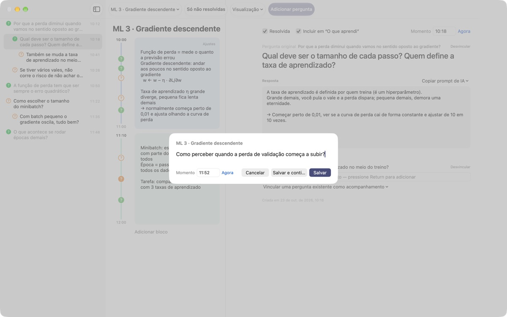
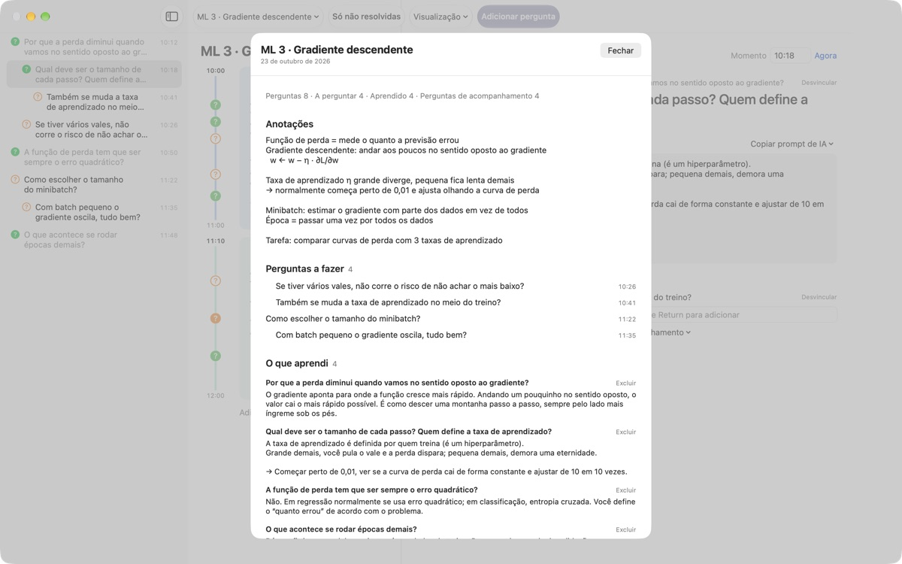
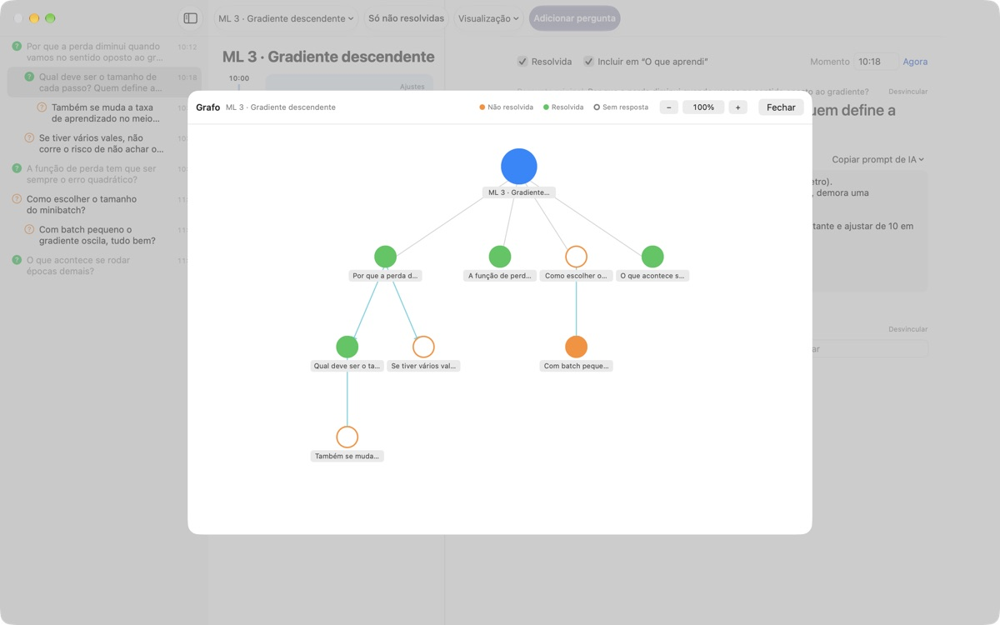

Nenhuma dúvida da aula
vai se perder
Aperte ⌘⇧N, digite uma linha e a pergunta fica ao lado das suas anotações daquele exato minuto. Você continua ouvindo e busca a resposta depois.
Para macOS 14 ou posterior. Sem conta: tudo fica neste Mac.

Experimente aqui
Você está no meio de uma aula de aprendizado de máquina. Digite uma pergunta e salve: aparece um ? ao lado do bloco daquele horário. Mude para um horário fora dos blocos e um bloco novo surge para guardá-la.
Quando a aula acaba, você ainda lembra da dúvida?
Mal você pensa "pera, por quê?" e o professor já passou para o próximo assunto. O ponto de interrogação na margem esquece de qual explicação veio e a dúvida fica sem resposta. O LectureQ prende cada pergunta às anotações daquele momento e a mantém à vista até você resolver.
Pergunte sem perder a próxima frase
Abra a janela de entrada com Adicionar pergunta na barra de ferramentas ou com ⌘⇧N. O horário é preenchido sozinho. Return salva, e ⌘Return salva e já deixa pronto para a próxima.
Cada pergunta aparece como um ? ao lado do bloco de tempo dela, então depois você vê na hora de que parte da aula ela saiu.

Pergunta respondida vira aprendizado
Escreva a resposta com suas palavras, marque como resolvida e ela vai para O que aprendi no resumo. O que ainda está em aberto fica em Perguntas a fazer, e a lista para a próxima aula se monta sozinha.Copiar prompt de IA, nos detalhes da pergunta, coloca na área de transferência um prompt pronto com o nome da aula e suas anotações daquele momento. É só colar no serviço de IA que você já usa.

Veja por onde seu raciocínio passou
As perguntas de acompanhamento ficam recuadas embaixo da pergunta de onde surgiram, e o grafo liga tudo com setas. Clique em um nó para ir direto à pergunta.
Em Estado de aprendizado você anota onde está agora, aonde quer chegar no fim do curso e o que quer aprender, e compara.

Para começar são três passos
- 1
Crie uma aula
Pelo menu de aulas à esquerda da barra de ferramentas, ou importe uma conversa salva em Markdown.
- 2
Anote assim que surgir
Aperte
⌘⇧N. Uma linha basta, o horário já vem preenchido. - 3
Responda depois
Escreva a resposta e clique no ? para marcar como resolvida. Ela vai para O que aprendi.
Atalhos de teclado
- ⌘⇧N
- Adicionar pergunta
- Return
- Salvar
- ⌘Return
- Salvar e escrever a próxima
- Esc
- Cancelar
- ⌘1
- Resumo: perguntas a fazer, o que aprendi, anotações
- ⌘2
- Grafo: perguntas originais e de acompanhamento
- ⌘3
- Blocos de tempo: os de todas as aulas, em ordem
- ⌘4
- Estado de aprendizado
- ⌘+ · ⌘- · ⌘0
- Texto maior, menor, tamanho padrão
Todos também estão no menu Visualização.
Todos os recursos são grátis
Grátis
- Perguntas rápidas e anotações por bloco de tempo
- Perguntas de acompanhamento e grafo
- Resumo, visão dos blocos e Estado de aprendizado
- Prompts de IA em cinco etapas, copiados para a área de transferência
- Importação de conversas em Markdown
Apoie o desenvolvedor
- Se o app te ajuda, mande uma gorjeta pequena pelos Ajustes
- A gorjeta não libera nada a mais
Com ou sem gorjeta, tudo funciona igual.
Sem anúncios e sem conta. Suas anotações ficam neste Mac.
Perguntas frequentes
O que significam as cores do ?
Na lista, um círculo laranja vazio é uma pergunta ainda não resolvida e um verde preenchido é uma resolvida. Clique no ? para alternar, e ative Só não resolvidas na barra de ferramentas para ver apenas as abertas. Ao lado de um bloco de tempo, a cor mostra se está resolvida e o círculo preenchido indica que já há resposta escrita.
Como funcionam os blocos de tempo?
Em Adicionar bloco, um novo bloco começa naquele momento e o anterior termina ali. Se você anotar uma pergunta num horário que nenhum bloco cobre, um bloco é criado em volta dela. Em Ajustes, no canto superior direito do bloco, você muda cor, início e duração ou o exclui. Se você mesmo excluir um bloco, aquela aula deixa de criar blocos automaticamente.
Qual a diferença entre "Resolvida" e "O que aprendi"?
Ao marcar Resolvida nos detalhes da pergunta, você também escolhe se ela entra em O que aprendi. Lá só aparecem as resolvidas que você incluiu. Dá para tirar ou recolocar pelo resumo também, e a resposta continua lá.
Como funcionam os prompts de IA?
Nos detalhes da pergunta, abra Copiar prompt de IA ao lado de Resposta e escolha uma etapa: Lapidar a pergunta, Buscar a resposta, Questionar a resposta, Extrair perguntas de acompanhamento ou Pedir nota para minha resposta. Um prompt com o nome da aula, suas anotações daquele momento, seu estado de aprendizado e a pergunta original vai para a área de transferência. Por enquanto o texto do prompt está em coreano; a maioria dos serviços de IA entende mesmo assim, e você pode pedir a resposta em português. Para pedir nota, primeiro escreva sua própria resposta. O app nunca se conecta sozinho a um serviço de IA.
Dá para importar uma conversa salva em Markdown?
Escolha Importar de Markdown… no menu de aulas. # Título vira o nome da aula, e em cada ## Seção a primeira pergunta é a original e as seguintes são de acompanhamento. As falas de quem aparece primeiro no arquivo viram perguntas, e as dos outros, a resposta à pergunta anterior. O arquivo original não é alterado.
Como excluo uma pergunta ou uma aula?
Clique com o botão direito na pergunta da lista e escolha Excluir. Para uma aula, use Excluir aula atual no menu de aulas; as perguntas e os blocos dela vão junto. Não dá para desfazer, então faça backup do que for importante antes.
Onde ficam meus dados e como faço backup?
Tudo fica neste Mac e nada é enviado para fora. Para o backup, feche o app e copie a pasta inteira ~/Library/Containers/com.lectureq.LectureQ/Data/Library/Application Support/LectureQ/ junto com os arquivos -wal e -shm. O app só envia estatísticas de uso anônimas, como a versão e os dias em que foi aberto, nunca o que você escreve.
A letra está pequena demais.
⌘+ aumenta, ⌘- diminui e ⌘0 volta ao tamanho padrão. Vai de 85% a 200% e a escolha fica salva.
Em quais Macs funciona?
Em qualquer Mac com macOS 14 ou posterior. O código-fonte é público no GitHub, em M1zz/LectureQ.
Algo não está funcionando. Para quem eu aviso?
Envie um feedback pelos Ajustes (⌘,) do app ou escreva para o endereço abaixo. Conte sua versão do macOS e o que você estava fazendo, assim conseguimos verificar mais rápido.
Dúvidas ou sugestões? Escreva para mizzking75@gmail.com.